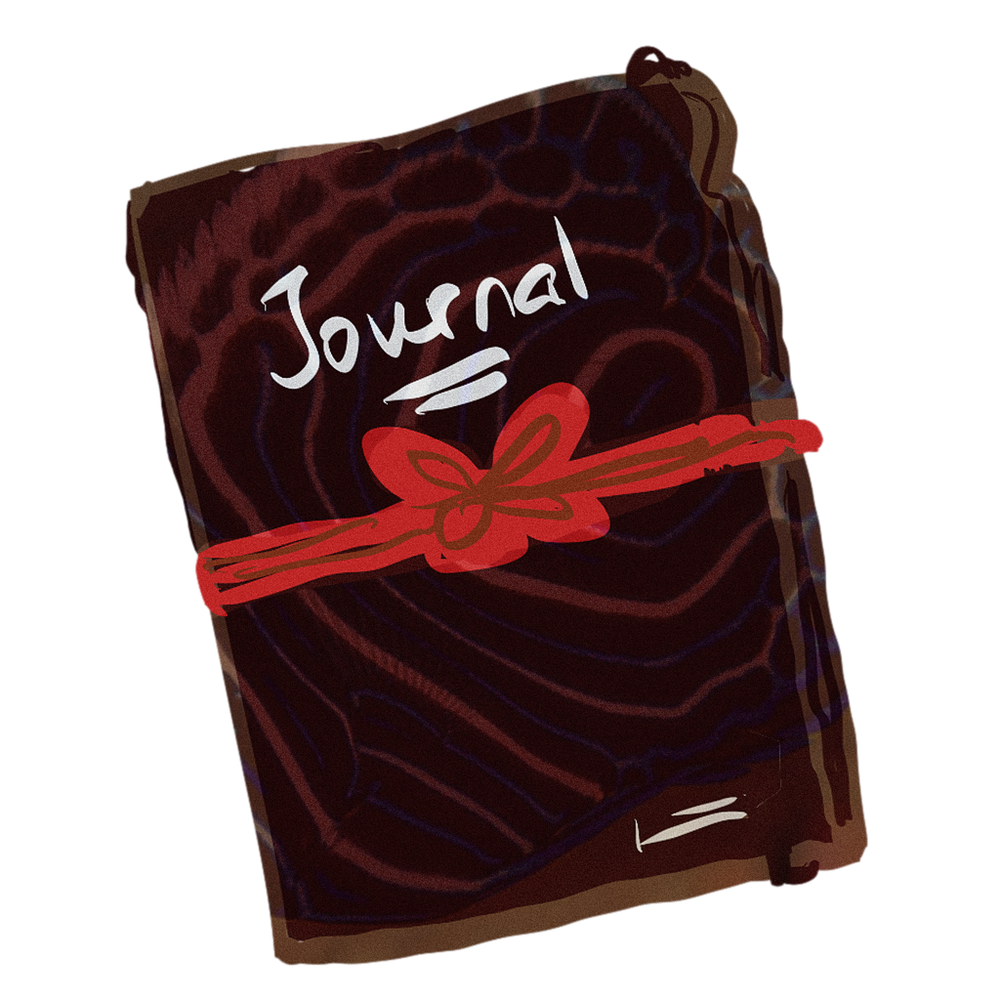

DayStream
A fast, native daily-notes stream for your existing markdown vault.
Logseq-compatible, plain files, no lock-in.


One endless stream
All your daily notes in a single scroll, newest first. Click a calendar day to jump anywhere.
Plain markdown
Notes are ordinary .md files in journals/. Works alongside Logseq or any editor.
Outliner tasks
TODO / DOING / DONE markers, nested bullets, cross-note task syncing, and one-click carry-forward.
Task timing
New tasks record when they were added; finished tasks show how long they took, right next to them.
Recurring & deadlines
Daily / weekly / one-off tasks seed themselves on top of the day's note. Deadlines stay pinned in the sidebar.
[[Wikilinks]] & pages
Click a link to open a rendered page with Logseq-style linked references. Date links jump to that day.
Search & shortcuts
⌘F finds across every note with the caret ready; ⌘N starts a todo for today. Plus a recordable system-wide quick-add shortcut.
Code blocks
Fenced ``` blocks render as monospaced cards and survive auto-formatting byte-for-byte.
Git backup
Commit and push the vault to its git remote in one click — or automatically, daily or weekly.
Capture from anywhere
A system-wide shortcut opens DayStream with a fresh todo in today's note, caret ready.
Native & fast
SwiftUI + AppKit on macOS 15+. No Electron, no cloud account, no database.
Getting started
- Download
DayStream-macOS.zipfrom the releases page and unzip it. - Move DayStream.app to
/Applications(or~/Applications) and open it. - Pick your vault — the folder that contains a
journals/directory (a Logseq vault root works as-is). - That's it. A one-page welcome introduces the features; today's note is created automatically — double-click it and start typing.
Usage guide
1. The stream & calendar
The main window is one continuous, reverse-chronological stream of your daily notes — today at the top, history below, loading more as you scroll. The sidebar calendar shows which days have notes; days with open tasks get an orange dot. Click a day to jump to it (and create it if it doesn't exist yet), or press Today to come back. The stream updates live when files change on disk, so it's safe to edit the vault from other tools at the same time.
2. Editing notes
Double-click a day (or the pencil button in its header) to edit it in place. The editor is a full outliner:
- Enter continues the current bullet; on an empty bullet it exits the list.
- Tab / ⇧Tab indent / outdent lines.
- Slash commands expand as you type:
/todo,/doing,/later,/now,/done. - Fenced code blocks (
```or~~~) get monospace highlighting in the editor and render as cards in the stream, with the language label from the info string. - Dropped images are copied into
assets/and embedded; dropped files and web links become markdown links. - Saving — ⌘S or closing the editor — auto-formats the note: consistent tabs and
-bullets, collapsed blank-line runs, a blank line kept between different block kinds (text, lists,[[wikilink]]groups, code fences). Code fence content is never touched.
3. Tasks, timing & syncing
Tasks are Logseq-style markers — - TODO ship the paper, DOING, LATER, NOW, DONE — or Status:: property lines. Click a checkbox to toggle it.
- Cross-note syncing: checking a task updates the same task (matching text) in every other note, journals and pages alike. Toggle it in Settings.
- Timing: tasks added via quick capture, recurring seeding, or ⌘S on today's note get an
added::timestamp. Completing a task stampscompleted::, and the stream shows a small duration capsule (e.g.2h 15m) next to the finished task. - Carry forward: the button copies every unfinished task from previous days into today's note, preserving nesting and skipping duplicates.
4. Recurring tasks & deadlines
Both live in Settings → Recurring and the sidebar.
- Recurring tasks repeat daily, weekly on a chosen weekday, or once on a date. On the day they're due, they appear as a
TODOat the top of that day's note. Seeding is duplicate-checked, so re-running never doubles up — and completing the task keeps it done. - Deadlines (sidebar Deadline… button) pin a dated item in the sidebar until you remove it: upcoming ones counted down (
Tomorrow,Fri,Aug 30), today's highlighted, overdue ones in red. Clicking a deadline jumps to its day; the task itself is seeded into that day's note.
5. Wikilinks, pages & search
- Typing
[[suggests existing page names — pick with ↑/↓, complete with Enter or Tab. - Clicking a wikilink opens the page as a rendered, front-page-style view with Linked References (every mention across the vault). Edit toggles the raw editor.
- Date-shaped links like
[[Aug 18th, 2026]]or[[2026-08-18]]jump to that day's note in the stream instead. - The search bar above the stream searches every journal and page at once; journal hits jump to their day, page hits open the page.
6. Quick capture from anywhere
A system-wide shortcut — ⌥T by default, recordable in Settings → Shortcuts — opens (or brings forward) DayStream from any app and starts a new todo in today's note with the caret ready, exactly like ⌘N inside the app. DayStream keeps a single window with no tabs; opening it again just brings the existing one forward.
7. Settings & maintenance
- General: vault location, cross-note task syncing, automatic daily carry-forward, and maintenance — delete empty notes, migrate legacy filenames.
- Fonts:
- Recurring: add and remove recurring tasks and inspect their schedules.
- Shortcuts: the full shortcut reference, plus the configurable global quick-add shortcut (record any combo with ⌘/⌥/⌃).
- Advanced: git backup — enable it, and a one-click Back Up Vault button appears in the sidebar. It commits the whole vault with a fixed message and pushes it to your GitHub remote (requires git; credentials must already be configured). Back up automatically repeats this daily or weekly (weekly is the default; it is off until you turn it on).
Filename migration renames 2026_08_18.md / 18-08-2026.md style journals to the canonical 2026-08-18.md. Every original is copied to backup/ first, and conflicting duplicates are skipped, never overwritten.
Keyboard shortcuts
| Shortcut | Where | Action |
|---|---|---|
| ⌘N | Anywhere | New todo today — appends - TODO to today's note and opens the editor with the caret ready |
| ⌘F | Anywhere | Open search with the cursor in the search bar |
| ⎋ | Search | Close the search panel |
| ⌥T | System-wide | Open DayStream and start a new todo in today's note with the caret ready (configurable in Settings → Shortcuts) |
| ⌘S | Editor | Save, auto-format and close |
| ⎋ | Editor | Save, auto-format and close (dismisses autocomplete first) |
| ⌘⏎ | Editor | Toggle TODO / DONE on the current line |
| ⌘K | Editor | Link selection (clipboard URL → link, else [[wikilink]]) |
| ⌘B / ⌘I | Editor | Bold / italic |
| Tab / ⇧Tab | Editor | Indent / outdent (or accept autocomplete) |
| ↑ / ↓ | Editor | Navigate page-name suggestions while typing [[ |
| ⌘, | Anywhere | Open settings |
Vault format & Logseq compatibility
DayStream expects a folder containing journals/ (a Logseq vault root works unchanged), or the journals/ folder itself. It creates pages/, assets/ and backup/ alongside as needed.
vault/
├── journals/ one markdown file per day
│ ├── 2026-08-17.md
│ └── 2026-08-18.md
├── pages/ [[wikilink]] targets
├── assets/ dropped images
└── backup/ safety copies from migrationJournal filenames: yyyy-MM-dd.md is canonical for new files; yyyy_MM_dd.md and dd-MM-yyyy.md are read transparently (and can be migrated in one click). Everything else — markers, properties (Key:: value), indentation, code fences — is plain Logseq markdown, so you can round-trip a vault between the two apps freely. The only DayStream-specific conventions are the optional added:: / completed:: timestamp properties, which Logseq simply shows as properties.
A sample note
- TODO Ship the parser fix
added:: 2026-08-19 09:12
- [[Parser Notes]] has the failing cases
- DONE Reply to Alice about the review
added:: 2026-08-19 08:40
completed:: 2026-08-19 10:02
- [[Gym]] log — 45 min, easy pace
- Snippet from yesterday's debugging:
```sh
git log --oneline -5
```The TODO/DONE markers render with checkboxes; the added::/completed:: pair powers the duration badge (1h 22m) next to the finished task; [[Parser Notes]] opens a page with every mention across the vault; the code fence renders as a monospaced card; and the blank lines between the different blocks are exactly what auto-format keeps when the editor closes.
Building from source
git clone https://github.com/SubhadityaMukherjee/DayStream.git
cd DayStream
./scripts/build_and_install # Debug build → ~/Applications → launch
./scripts/build_and_install release # Release build
./scripts/build_and_install test # Build + run unit testsRequires Xcode 16+ (macOS 15 SDK); the script installs XcodeGen via Homebrew on first run. The checked-in .xcodeproj is generated from project.yml.
FAQ
| Will it touch my existing vault? | Only when you edit. All writes are atomic; destructive operations (migration, cleanup) back up first or refuse to touch non-empty files. External edits are picked up live via file watching. |
| Can I use it together with Logseq? | Yes — same file layout and syntax. A vault can round-trip between both apps. The filename migration is optional and always backs up to backup/ first. |
| Where do settings live? | App settings live in macOS defaults (plist), never in the vault. Deadlines are stored in defaults and mirrored to a human-editable deadlines.md in the vault root, so they travel with it. |
| What happens at midnight? | A rollover timer creates the new day's note and seeds recurring tasks and deadlines due that day. |
| Is there an iOS / iPadOS app? | Not yet — macOS 15+ only for now. |
Branching & releases
- develop — active development; CI builds and tests every push.
- main — stable; releases are tagged from it (
v1.0.0,v1.1.0, …) and published as GitHub Releases automatically.